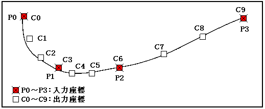

★PROGRAMMER'S GUIDE
★数学計算ライブラリ
★PROGRAMMER'S GUIDE
★数学計算ライブラリ
■
｜
進む▼
数学計算ライブラリ
1．ガイド
1.1 目的
- 数学計算ライブラリは3D表示や、3Dオブジェクトの移動計算、32ビット固定小数点演算などを容易に行うためのルーチン群です。
これらのルーチンは、次のカテゴリに分類されます。
- ●三角関数
- sin, cos値をテーブルより取り出します。テーブルは1度単位で登録されていて、1度の間は直線補完されます。
- ●マトリックス演算処理
- マトリックススタックの管理とマトリックス合成処理を行います。
- ●DSPによる3D座標変換処理
- スプライト3D表示ライブラリで使用しているポリゴンデータの隠面判定、輝度計算、座標変換処理を一括してDSPで行います。
- ●透視変換処理
- 視点座標系において3Dから2Dスクリーンへ透視変換を行います。
視点位置は原点で、スクリーン位置はZ軸の-1.0の位置とします。
- ●乱数生成処理
- ゲームで使用する乱数を0から0xffffffffの範囲で生成します。
- ●スプライン曲線計算処理
- この曲線計算関数は3次スプライン曲線を使用しており、次のような特徴があります。
(1)２次元、３次元座標をサポート
(2)各出力座標での接線ベクトルが取得可能
図1に示すように、わずかな点を指定するだけで、その点を滑らかに通過する曲線上の点を取得することができます。図1では、入力座標の配列P0〜3、配列の個数4、出力座標の個数10を指定すると、その点を滑らかに通過する出力座標の配列が c0〜9 として取得できることを表しています。また、接線付関数を使用することにより、各出力座標での接線ベクトルを取得することができます。接線ベクトルはキャラクタの進行方向などに利用できます。
図1 曲線計算の概念図

- ●固定小数点演算
- 32ビット固定小数点データ(16ビット整数部＋16ビット小数部)の乗除算および、整数、浮動小数点データとの相互型変換を行うルーチンやマクロがあります。
- ●その他の関数
- 上記以外のその他の数値計算関数です。
■
｜
進む▼
★PROGRAMMER'S GUIDE
★数学計算ライブラリ
Copyright SEGA ENTERPRISES, LTD., 1997